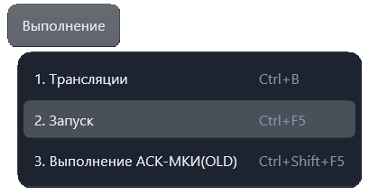

Запуск ПК
Команда «Выполнение → Запуск» запускает программу контроля во встроенном исполнителе. Сочетание по умолчанию: Ctrl + F5.

Перед запуском
Сделайте активной нужную программу, её результат трансляции или вкладку исполнения. Из текстового редактора приложение сначала выполняет трансляцию. При наличии ошибок трансляции запуск блокируется с сообщением об их количестве.
Для трансляции и встроенного исполнения поддерживаются .pk, .pkw,
.opk, .opkw и .acs.
При повторном запуске из вкладки исполнения используются подготовленные для неё команды.
Если исходный текст изменён, выполните новую трансляцию из редактора.
Порядок работы
- Выберите нужную программу и нажмите Ctrl+F5 или «Выполнение → Запуск».
- Если обнаружены ошибки трансляции, исправьте их и повторите запуск.
- Следите за сообщениями и измерениями в протоколе слева и текущей командой в тексте справа.
- Для паузы нажмите F5 или кнопку паузы. Для возобновления используйте F5 или «Продолжить».
- Для досрочной остановки используйте «Завершить»; в активном исполнителе также доступен Esc.
Управление и результаты
Ctrl+F5 задаёт обычный запуск. F5 без Ctrl управляет состоянием активного исполнителя: запускает готовую проверку, ставит её на паузу или продолжает — в зависимости от доступных кнопок.
Кнопки и доступные действия меняются по состоянию выполнения. На паузе можно перейти к следующей команде: оставшиеся действия текущей команды прерываются, оборудование сбрасывается, а следующая команда ожидает продолжения.
До запуска и на паузе шестерёнка в окне выполнения позволяет изменить «Остановку при ошибке» и «Повтор измерения». При ошибке ориентируйтесь на сообщение и запрос приложения.
После завершения итоговый протокол можно просмотреть, распечатать или экспортировать в PDF кнопками над его текстом. Формирование итогового протокола зависит от настроек протокола.
Управление шагами описано в статье «Режимы выполнения и пошаговый запуск».